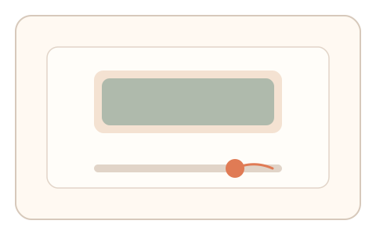
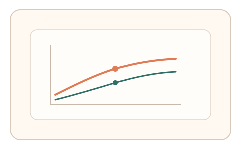

#31
视觉思考范式：时域/适应/残影
已扩展
闪烁融合阈值
通过调节闪烁频率到“刚不再闪烁”，采集主观融合阈值与调整轨迹作为人类特征。
概念原文
元素以可调频率闪烁，用户拖动滑杆直到“感觉不再闪烁”为止。记录临界融合频率与调整路径。
利用人类 CFF 阈值与调整行为作为生理特征。
研究背景
临界闪烁融合阈值（CFF）描述了人眼感知闪烁与稳定光的临界频率，与个体状态、亮度与视野有关。让用户主动调节阈值可将时域感知特征转化为连续交互信号。
核心机制
- 呈现闪烁元素并提供频率调节控件。
- 用户将频率调整到“感觉不再闪烁”的临界点。
- 记录阈值、微调轨迹与回拉行为。
- 可进行 2 次短重复以提高可靠性。
用户流程
- 步骤 1：用户看到闪烁方块与调节滑杆。
- 步骤 2：用户调整频率直到“刚不再闪烁”。
- 步骤 3：系统记录阈值与微调路径完成判定。
判定信号
临界融合频率与调节曲线
阈值范围与调整过程体现人类时域感知特性。
回拉/微调次数
真实用户常在临界点附近进行细微试探。
判定逻辑
使用“阈值区间 + 调节路径形态”判定：阈值必须落入设备/亮度校准后的合理范围，且微调轨迹呈现接近临界的试探模式。
对抗面
- 脚本直接设置预估阈值绕过
- 通过读取屏幕刷新率进行推断
防御与缓解
- 双区域相对比较，要求同时消除两处闪烁
- 随机初始频率与亮度，降低单值猜测有效性
- 结合反应时与微调节律进行交叉验证
可达性与风险
对光敏用户提供非闪烁替代任务；允许降低亮度并提供明确的安全提示。
- 闪烁可能触发光敏不适，需要安全提示
- 显示器刷新率与环境亮度会影响阈值稳定性
可视化状态
状态 1：闪烁呈现
显示闪烁方块与频率调节滑杆。

状态 2：临界调节
用户在临界点附近微调并回拉。

状态 3：阈值判定
记录阈值与调节曲线，完成判定。
参考资料
Flicker fusion threshold
说明闪烁融合阈值的基本概念。